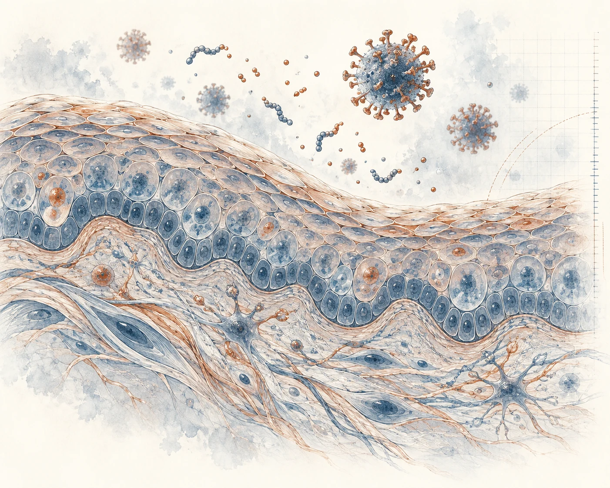

SKIN BIOLOGY · HOST DEFENSE · VIROLOGY
Understanding skin, infection and host defense.
We investigate how tissues maintain cellular health, respond to infection and repair damage, while developing biological reference materials and assays for reliable measurement.
A virtual research group led by Tanay Bhatt, bringing together researchers working across collaborating institutions.

RESEARCH
From tissue biology to reliable measurement.
Our work connects skin and epithelial biology with host–pathogen interactions, virology and biological measurement.
Skin biology and tissue repair
How epithelial tissues sense injury, maintain integrity and coordinate repair.
Explore theme 02Antimicrobial peptides and host defense
How host-derived molecules contribute to protection against infection.
Explore theme 03Virology and host–pathogen interactions
Viral infection, cellular responses and experimental approaches to antiviral activity.
Explore theme 04Cellular health and circadian skin biology
The connections between cellular stress, biological rhythms and skin function.
Explore theme 05Biological reference standards and measurement
Reference materials and assays that help make biological measurements comparable.
Explore themePEOPLE & COLLABORATION
A shared scientific focus.
Across institutions.
Project associates, collaborating researchers and students bring experimental and computational perspectives to a connected programme of research.
Meet our researchers and alumni


PUBLICATIONS
Selected academic work
Research on epithelial repair, antimicrobial peptides and viral infection.
ABOUT THE GROUP
Connected by research.
Our work takes place across collaborating institutions and includes academic collaborations and R&D involving Koshkey. Each project is presented through its scientific questions and research scope.
Our approach and affiliations